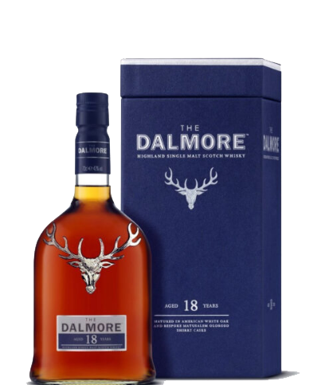

DETALLES

- TIPO: Whisky
- AÑO: 18 Años
- CAPACIDAD: 750ml
- DESCRIPCIÓN: El Dalmore Single Malt 18 años es un whisky de malta escocés de las Highlands, envejecido durante 18 años en barricas de jerez y bourbon. Este whisky se caracteriza por tener un sabor rico y afrutado, con notas de naranja, caramelo y chocolate oscuro. En nariz, presenta aromas a cítricos y especias, con notas de vainilla y roble tostado.
- MARIDAJE: En boca, es suave y sedoso, con sabores intensos de frutas maduras, caramelo y especias. El final es largo y complejo, con notas de chocolate oscuro y cítricos.
NOMBRE DEL PRODUCTO
PRECIO $ 125.000
Califica este producto